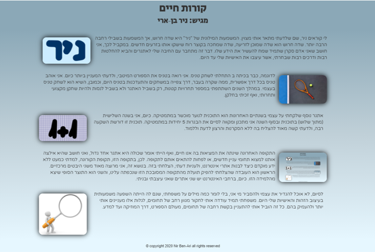

לי קוראים ניר, שם שלדעתי מתאר אותי מצוין. המשמעות המילונית של "ניר" היא שדה חרוש, אך המשמעות בשבילי רחבה הרבה יותר. שדה חרוש הוא שדה שמוכן לזריעה, שדה שמחכה בקוצר רוח שיזרעו בו בזרעים חדשים. במקביל לכך, אני חושב שאני אדם סקרן שתמיד שמח להעשיר את הידע שלו. דבר זה מתחבר עם החיבה שלי לאתגרים והביא להחלטות רבות ודרכים רבות שבחרתי, אשר עיצבו את האישיות שלי עד היום.
לדוגמה, כבר בכיתה ב התחלתי לשחק טניס. אני רואה בטניס את הספורט המיטבי, ולדעתי המעניין ביותר כיום. אני אוהב טניס בכל דרך אפשרית, ממה שקרה בעבר, דרך צפייה במשחקים והתעדכנות בטניס היום, וכמובן, השיא הוא לשחק טניס בעצמי. במהלך השנים השתתפתי במספר תחרויות קטנות, רק בשביל האתגר ולא בשביל לנסות ולהיות שחקן מקצועי ותחרותי, ואף זכיתי בחלקן.
אתגר נוסף שלקחתי על עצמי בשנתיים האחרונות הוא התוכנית לנוער מוכשר במתמטיקה. כיום, אני בשנה השלישית (מתוך שלוש) בתוכנית ובסוף השנה אני מתכנן ומקווה לסיים את הבגרות 5 יחידות במתמטיקה. תוכנית זו דורשת השקעה רבה, ולדעתי קשה מאוד להצליח בה ללא הסקרנות והרצון לדעת וללמוד.

התקופה האחרונה שינתה את המציאות בה אנו חיים, ואף הייתי אומר שכולה היא אתגר אחד גדול, ואני חושב שהיא אילצה אותנו למצוא תחומי עניין חדשים, או לפחות להתאים אותם לתקופה. לכן, בתקופה הזו, תקופת הקורונה, למדתי כמעט ללא ידע מוקדם כיצד לבנות אתרי אינטרנט, ולעניות דעתי, הצלחתי בזה. בנושא זה, אני מרוצה מאוד משני היבטים מרכזיים. הראשון הוא העובדה שהצלחתי להפיק תועלת מהתקופה המסובכת הזו שנכפתה עלינו, והשני הוא התוצר הסופי שיצא מהלמידה הזו. כיום, ברחבי האינטרנט יש שני אתרים שאני עיצבתי ובניתי.
לסיום, לא אוכל להגדיר את עצמי ולהסביר מי אני, בלי לומר כמה מילים על משפחתי, שגם לה הייתה השפעה משמעותית בעיצוב הזהות והאישיות שלי היום. משפחתי תמיד עודדה אותי לחקור מגוון רחב של תחומים, לגלות אלו מעניינים אותי יותר ולהעמיק בהם. כל זה הוביל אותי להתעניין בקשת רחבה של תחומים, מעולם הספורט, דרך המוזיקה ועד למדע.